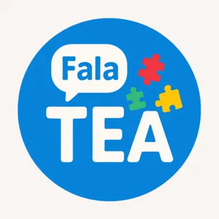
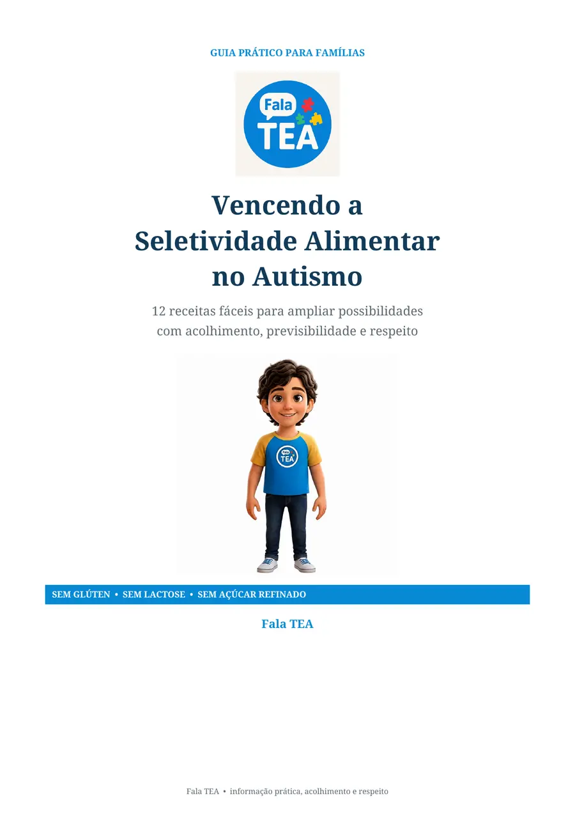
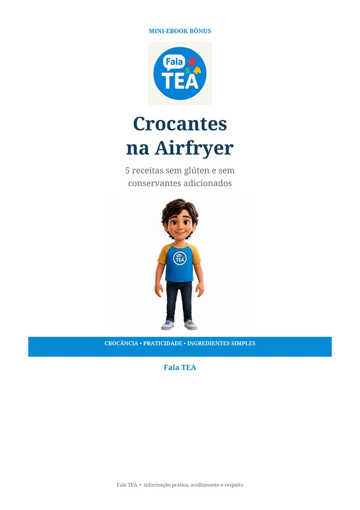

O cardápio parece cada vez menor
Os mesmos poucos alimentos se repetem e qualquer novidade gera resistência.

Fala TEA Quero conhecer12 receitas práticas e orientações acolhedoras para famílias que enfrentam a seletividade alimentar no autismo — sem pressão, culpa ou promessas milagrosas.


Quando quase toda refeição vira preocupação, é comum sentir que faltam opções e orientação prática.
Os mesmos poucos alimentos se repetem e qualquer novidade gera resistência.
A família tenta ajudar, mas cobrança e ansiedade acabam tomando conta da mesa.
Receitas complicadas e ingredientes difíceis não cabem na rotina de uma família real.
O ebook Fala TEA reúne receitas simples e pequenas estratégias de apresentação para que a família possa experimentar novas possibilidades respeitando o ritmo, a previsibilidade e as necessidades da criança.
“Cada contato conta: olhar, tocar, cheirar ou provar já pode ser um passo.”
Sem capítulos intermináveis. O conteúdo vai direto ao ponto para ajudar no planejamento e na apresentação das refeições.
Panquequinha de banana, tapioca com ovo e cuscuz com frango.
Bolinho de banana, trufinha de cacau e pãozinho de batata.
Almôndegas, arroz cremoso e bolinho de peixe.
Creme de abóbora, omelete de forno e polenta cremosa.
Um mini-ebook complementar com preparações sem glúten e sem conservantes adicionados — perfeito para crianças que preferem alimentos sequinhos e crocantes.
Cuida de uma criança autista com repertório alimentar restrito.
Precisa de receitas possíveis para a rotina real.
Busca uma abordagem sem pressão ou barganha.
Quer entender melhor como apresentar texturas e formatos.
Pagamento único e processado com segurança pela Eduzz.
Compra única de R$ 12,90. O acesso digital é enviado após a confirmação do pagamento.
É um produto 100% digital em PDF. Após o lançamento, o acesso será liberado pela plataforma de pagamento.
Cada criança tem necessidades e preferências próprias. O ebook oferece possibilidades práticas, mas não substitui avaliação individual de nutricionista, terapeuta alimentar ou equipe responsável.
As preparações foram formuladas sem esses ingredientes. Ainda assim, famílias com alergia ou doença celíaca devem conferir rótulos e riscos de contaminação cruzada.
Sim. Vendido separadamente, o mini-ebook “Crocantes na Airfryer” custaria R$ 9,90. Nesta oferta, ele acompanha o material principal por R$ 0,00.
Somente para preparar as cinco receitas do bônus. As 12 receitas do ebook principal usam métodos variados e comuns na cozinha.